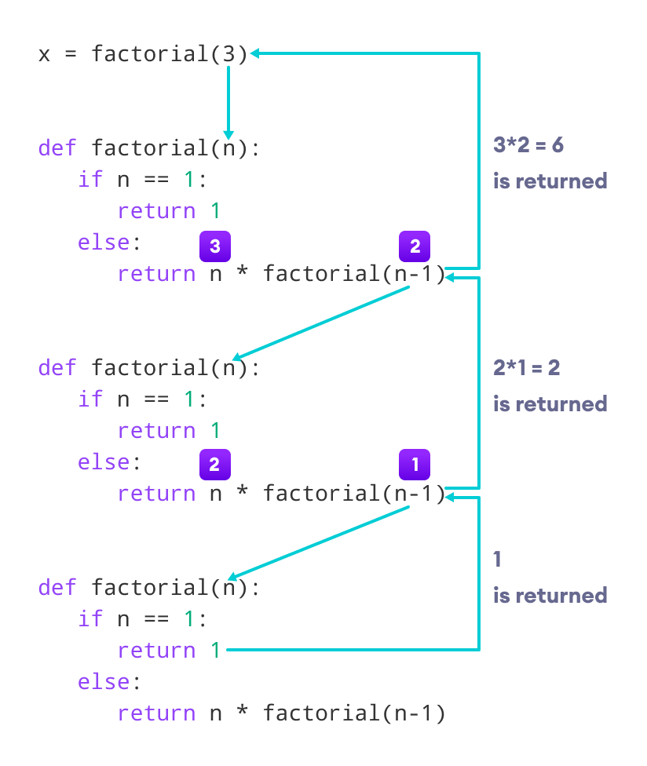

Python
tutorial
Created by Farzad Latifnia (@FreezeMan)
Apr 2020 - Jan 2021
How to Get Started With Python?
you have a platform
IDE or Editor
if not install, so installing python
Using the Python Interpreter
The Python interpreter is usually installed:
# /usr/local/bin/python
or
# /usr/bin/python
# /usr/bin/python2
# /usr/bin/python3
How to check Python?
[root@FreezeMan ~]# python3 --version
Python 3.6.8
[root@FreezeMan ~]# python --version
bash: python: command not found...
[root@FreezeMan ~]# alias python=python3
[root@FreezeMan ~]# python --version
Python 3.6.8
How you can run Python?
- Run Python in Immediate mode (on Shell)
- Run Python script mode(by Command or File)
- Run Python in the Integrated Development Environment (IDE)
Run Python in Immediate mode (on Shell or Interactive)
- Ctrl-P: to the first Python prompt you get
- Ctrl-N: python prompt moves one down
- Ctrl-A: moves the cursor to the beginning of the line
- Ctrl-E: moves the cursor to the end of the line
- Ctrl-B: moves it one position to the left
- Ctrl-F: moves it one position to the right
- Backspace: erases the character to the left of the cursor
- Ctrl-D: erases the character to its right
- Ctrl-K: (kills)erases the rest of the line to the right of the cursor
- Ctrl-Y: yanks back the last killed string
[root@FreezeMan ~]# python
Python 3.6.8 (default, Nov 21 2019, 19:31:34)
[GCC 8.3.1 20190507 (Red Hat 8.3.1-4)] on linux
Type "help", "copyright", "credits" or "license" for more information.
>>>
Run Python script mode(by Command)
python -c command [arg] ...
[root@FreezeMan example]#python -c "print('test')"
test
[root@FreezeMan example]#
Argument Passing
The script name and additional arguments thereafter are passed to the script in the variable sys.argv, which is a list of strings
When the script name is given as ’ - ’ (meaning standard input), sys.argv[0] is set to ’ - ’. When -c command is used, sys.argv[0] is set to ’-c’
#access by import that
import sys
args = sys.argv
print(sys.argv)
Argument Passing (Example)
#content of py_script.py
import sys
print(sys.argv)
[root@FreezeMan example]# python py_script.py test
['py_script.py', 'test']
[root@FreezeMan example]# python3 -c "import sys; print(sys.argv)"
['-c']
[root@FreezeMan example]#
Run Python script mode(by File)
Note: (.py) extension file python
[root@FreezeMan example]# python py_script.py
hello world !!!
[root@FreezeMan example]#
hashband/sheband
- #!/usr/bin/env python3
- #!/usr/bin/python3
#!/usr/bin/env python3
print("hello world !!!")
“Compiled” Python files
script.pyc is successfully compiled of script.py
Python Keywords and Identifiers
- keywords are case sensitive (Note: Python is a case-sensitive language)
- keywords (reserved words in Python)
- identifiers (names given to variables, functions, etc.)
- cannot use a keyword as a variable name, function name or any other identifier
- There are 33 keywords in Python 3.7
- All the keywords except True, False and None are in lowercase and they must be written as they are
Python Identifiers
An identifier is a name given to entities like class, functions, variables, etc. It helps to differentiate one entity from another.
Rules for writing identifiers
- Identifiers can be a combination of letters in lowercase (a to z) or uppercase (A to Z) or digits (0 to 9) or an underscore ( _ ) . Names like myClass, var_1
- An identifier cannot start with a digit. 1variable is invalid, but variable1 is a valid name
- Keywords cannot be used as identifiers
- We cannot use special symbols like !, @, #, $, % etc. in our identifier
- An identifier can be of any length
Python Statement, Indentation and Comments
Each enter(↵) per line sentence contains Statement and Syntax code Python.
Python Statement
import json
a = 1
- Multi-line statement
- parentheses ( ), brackets [ ], and braces { }
- put multiple statements in a single line
a = 1 + 2 + 3 + \
4 + 5 + 6 + \
7 + 8 + 9
a = (1 + 2 + 3 +
4 + 5 + 6 +
7 + 8 + 9)
colors = ['red',
'blue',
'green']
a = 1; b = 2; c = 3
Python Indentation
for i in range(1,11):
print(i)
if i == 5:
break
if True:
print('Hello')
a = 5
if True: print('Hello'); a = 5
Python Comments
this sentence never read or run by interpret's Python
(#...) and ('''...''') or ("""...""")
# This is a comment
# print out Hello
# print("can't print")
print('Hello')
"""This is also a
perfect example of
multi-line comments"""
Python Variables and Literals
- variable is a named location used to store data in the memory
- Python is a type-inferred language(Changing the value of a variable)
Variables
- Declaring and assigning value to a variable(by =)
- Assigning multiple values to multiple variables
number = 10
print(number)
number = 1.1
print(number)
website = "lenovo.com"
print(website)
website = 'freezeman.com'
print(website)
x = y = z = 0 # Zero x, y and z
a, b = 10, 20 # a = 10 ; b = 20
string1, string2, string3 = '', 'Trondheim', 'Hammer Dance'
non_null = string1 or string2 or string3
print(non_null)
#10
#1.1
#lenovo.com
#freezeman.com
#'Trondheim'Literals
- Numeric Literals
- String literals
- Boolean literals
- Literal Collections
At Next tutorial different Data Types you can use in Python
Python Data Types
- Every value in Python has a datatype
- Everything is an object in Python
- Data types are actually classes
- Variables are instance (object) of these classes
- The index starts from 0 (zero) in Python
Python Numbers
- Integers
- floating point numbers
- complex
They are defined as int, float and complex
Python Strings
- String is sequence of Unicode characters
- can use single quotes or double quotes to represent strings
- Multi-line strings can be denoted using triple quotes
- Just like a list and tuple
- the slicing operator [ ] can be used with strings
s = "This is a string"
s = 'Hello world!'
s = '''A multiline
string'''
s = """Hello world!"""
s[4] = 'l' # TypeError: 'str' object does not support item assignment
print("s[4] =", s[4]) => 's[4] = l'
print(s) => 'Helll world!'
a, b = "AB"
a, b = "AABB" # ValueError: too many values to unpack (expected 2)
Python Boolean
- True
- False
Note: Python interprets any non-zero value as True. None and 0 are interpreted as False.
Python List
- List is an ordered sequence of items
- Items separated by commas are enclosed within brackets [1, 2, ...]
- are mutable (can be altered or changeable)
- Allows duplicate members
- Has Indexing
a = [1, 2.2, 'python']
a = [1, 2, 3, 3]
print(a) # => [1, 2, 3, 3]
a[2] = 4
print(a) # => [1, 2, 4, 3]Python Tuple
- Tuple is an ordered sequence of items same as a list
- The only difference is that tuples are immutable(unchangeable)
- Tuples once created cannot be modified
- Tuples are used to write-protect data and are usually faster than lists
- It is defined within parentheses where items are separated by commas (1, "22", ...)
- Allows duplicate members
- Has Indexing
t = (5,'program', 1.3)
print("t[2] = ", t[2]) # => t[2] = 1.3
Python Dictionary
- Dictionary is an unordered collection of key-value pairs
- dictionaries are defined within braces { } with each item(by " , ") being a pair in the form key:value
- Key and value can be of any type
- are mutable (can be altered or changeable)
- No duplicate members
d1 = {1: 123, 'key123': 2}
d2 = {"first": 'v1', 2.2: 2}
Python Set
- Set is an unordered collection of unique items(*)
- Set is defined by values separated by comma inside braces { }
- Items in a set are not ordered
- Indexing has no meaning
- No duplicate members(*)
sa = {5, 2, 3, 1, 4}
sb = {1, 2, 2, 3, 3, 3}
print(sb)
# output: {1, 2, 3}
Conversion between data types
Built-in Fanctions
int() - float() - str() - tuple() - list() - set()
s = str(123) # => "123"
s2 = str("string sample")
l2 = list(s) # => ["1", "2", "3"]
t2 = tuple(l2) # => ("1", "2", "3")
t1 = (12, "22", "13")
l1 = [10, "2.99", 45.22]
l3 = list(t1) # => [12, "22", "13"]
t3 = tuple(l1) # => (10, "2.99", 45.22)
_set = set(t2) # => {"1", "2", "3"}
i = int(1.23) # => 1
# i = int("1.23") # ValueError
f = float(123) # => 123.0
Check Type
Built-in Fanctions
- type()
- isinstance()
s = "This is a string"
l = ["1", 2, "3", 4.4]
t = (1, "2", 3, "4.4")
_set = {1, 2, 3}
i = 123
f = 1.23
print(type(s)) # => <class 'str'>
print(type(l)) # => <class 'list'>
print(type(t)) # => <class 'tuple'>
print(type(i)) # => <class 'int'>
print(type(f)) # => <class 'float'>
print(isinstance(s, str)) # => True
print(isinstance(l, tuple)) # => False
print(isinstance(t, tuple)) # => True
print(isinstance(i, list)) # => False
print(isinstance(f, int)) # => False
Python global, local and nonlocal variables
It is will be taught in the Functions section
Python Input, Output
Built-in Fanctions
print()
input()
Python Output Using print() function
Use the print() function to output data to the standard output device (screen)
print(*objects, sep=' ', end='\n', file=sys.stdout, flush=False)print('This sentence is output to the screen')
a = 5
print('The value of a is', a)
print(1, 2, 3, 4, sep='#', end='&')output:
This sentence is output to the screen
The value of a is 5
1#2#3#4&Output formatting
str.format() | use the % operator | f-string
x = 5; y = 10; z = 12.3456789
print('The value of x is {} and y is {}'.format(x,y))
# The value of x is 5 and y is 10
print('I love {1} and {0}'.format('bread','butter'))
# I love butter and bread
print('Hello {name}, {greeting}'.format(greeting = 'Goodmorning', name = 'John'))
# Hello John, Goodmorning
print('The value of z is %3.2f' %z)
# The value of z is 12.35
print("int is:%i - int is:%8i - int is:%1i" % (12.23, 12, 100))
# int is:12 - int is: 12 - int is:100
print("int is, %i - float is %8.5f" % (12.23, 12))
# int is, 12 - float is 12.00000
print("int is %s. float is %s." % (12.23, 12))
# int is 12.23. float is 12.
greeting = 'Good Morning'
name = 'Farzad'
print(f"Hello {name}, {greeting}")
# Hello Farzad, Good Morning
print(f"{2 * 37}")
# 74
print(f"{2 * (name + ' ')}|||")
# Farzad Farzad |||
Python Input
Note: input has string value out or returning
num = input('Enter a number: ')
print(num)
### output:
Enter a number: 10 ↵
'10'Python Operators
Operators are special symbols in Python that carry out arithmetic or logical computation
- Arithmetic operators
- Comparison operators
- Logical operators
- Bitwise operators
- Assignment operators
- Identity operators
- Membership operators
Arithmetic operators (Section 1)
| Operator | Meaning | Example |
|---|---|---|
| + | Add two operands or unary plus | x + y+ 2 |
| - | Subtract right operand from the left or unary minus | x - y- 2 |
| * | Multiply two operands | x * y |
| / | Divide left operand by the right one (always results into float) | x / y |
| % | Modulus - remainder of the division of left operand by the right | x % y (remainder of x/y) |
Arithmetic operators (Section 2)
| Operator | Meaning | Example |
|---|---|---|
| // | Floor division - division that results into whole number adjusted to the left in the number line | x // y |
| ** | Exponent - left operand raised to the power of right | x**y (x to the power y) |
Comparison operators
| Operator | Meaning | Example |
|---|---|---|
| > | Greater than - True if left operand is greater than the right | x > y |
| < | Less than - True if left operand is less than the right | x < y |
| == | Equal to - True if both operands are equal | x == y |
| != | Not equal to - True if operands are not equal | x != y |
| >= | Greater than or equal to - True if left operand is greater than or equal to the right | x >= y |
| <= | Less than or equal to - True if left operand is less than or equal to the right | x <= y |
Logical operators
| Operator | Meaning | Example |
|---|---|---|
| and | True if both the operands are true | x and y |
| or | True if either of the operands is true | x or y |
| not | True if operand is false (complements the operand) | not x |
Bitwise operators
| Operator | Meaning | Example |
|---|---|---|
| & | Bitwise AND | x & y = 0 (0000 0000) |
| | | Bitwise OR | x | y = 14 (0000 1110) |
| ~ | Bitwise NOT | ~x = -11 (1111 0101) |
| ^ | Bitwise XOR | x ^ y = 14 (0000 1110) |
| >> | Bitwise right shift | x >> 2 = 2 (0000 0010) |
| << | Bitwise left shift | x << 2 = 40 (0010 1000) |
Assignment operators (Section 1)
| Operator | Example | Equivalent to |
|---|---|---|
| = | x = 5 | x = 5 |
| += | x += 5 | x = x + 5 |
| -= | x -= 5 | x = x - 5 |
| *= | x *= 5 | x = x * 5 |
| /= | x /= 5 | x = x / 5 |
| %= | x %= 5 | x = x % 5 |
Assignment operators (Section 2)
| Operator | Example | Equivalent to |
|---|---|---|
| //= | x //= 5 | x = x // 5 |
| **= | x **= 5 | x = x ** 5 |
| &= | x &= 5 | x = x & 5 |
| |= | x |= 5 | x = x | 5 |
| ^= | x ^= 5 | x = x ^ 5 |
| >>= | x >>= 5 | x = x >> 5 |
| <<= | x <<= 5 | x = x << 5 |
Identity operators
| Operator | Meaning | Example |
|---|---|---|
| is | True if the operands are identical (refer to the same object) | x is True |
| is not | True if the operands are not identical (do not refer to the same object) | x is not True |
Membership operators
| Operator | Meaning | Example |
|---|---|---|
| in | True if value/variable is found in the sequence | 5 in x |
| not in | True if value/variable is not found in the sequence | 5 not in x |
Python Flow Control
- if-elif-else
- for Loop
- while Loop
- break, continue
- pass
Note: Python interprets any non-zero value as True. None and 0 are interpreted as False.
Python if-elif-else
if test expression:
statement(s)num = 3
if num > 0:
print(num, "is a positive number.")
print("This is always printed.")
# ----------- #
if num >= 0:
print("Positive or Zero")
else:
print("Negative number")
# ----------- #
if num > 0:
print("Positive number")
elif num == 0:
print("Zero")
elif num < 0:
print("Negative number")
else:
print("not number for compare")
if num > 0:
print("Positive number")
elif num == 0:
print("Zero")
else:
print("Negative number")Python for Loop
The for loop in Python is used to iterate over a sequence (list, tuple, string) or other iterable objects
for val in sequence:
Body or statement(s)# List of numbers
numbers = [6, 5, 3, 8, 4, 2, 5, 4, 11]
# variable to store the sum
sum = 0
# iterate over the list
for val in numbers:
sum = sum+val
print("The sum is", sum)for loop with else
A for loop can have an optional else block as well
digits = [0, 1, 5]
for i in digits:
print(i)
else:
print("No items left.")
output:
0
1
5
No items left.Python while Loop
- The while loop in Python is used to iterate over a block of code as long as the test expression (condition) is true
- In the while loop, test expression is checked first. The body of the loop is entered only if the test_expression evaluates to True
- After one iteration, the test expression is checked again
- This process continues until the test_expression evaluates to False
while test_expression:
Body or statement(s)
while loop example
n = 10
# initialize sum and counter
sum = 0
i = 1
# ----------- #
while i <= n:
sum = sum + i
i = i+1 # update counter
# ----------- #
# print the sum
print("The sum is", sum)
Enter n: 10
The sum is 55
While loop with else
Same as with for loops, while loops can also have an optional else block
counter = 0
while counter < 3:
print("Inside loop")
counter = counter + 1
else:
print("Inside else")
output:
Inside loop
Inside loop
Inside loop
Inside elsePython break and continue
- In Python, break and continue statements can alter the flow of a normal loop
- The break statement terminates the loop containing it
- The continue statement is used to skip the rest of the code inside a loop for the current iteration only
- Loop does not terminate but continues on with the next iteration
Python pass statement
- In Python programming, the pass statement is a null statement
- However, nothing happens when the pass is executed
- We can do the same thing in an empty function or class as well
sequence = {'p', 'a', 's', 's'}
for val in sequence:
pass
def function(args):
pass
class Example:
pass
Python Functions
- In Python, a function is a group of related statements that performs a specific task
- Functions help break our program into smaller and modular chunks
- As our program grows larger and larger, functions make it more organized and manageable
- Furthermore, it avoids repetition and makes the code reusable
components of Function
- Keyword def that marks the start of the function header
- function name to uniquely identify the function
- Parameters (arguments) through which we pass values to a function. They are optional
- A colon (:) to mark the end of the function header
- Optional documentation string (docstring) to describe what the function does
- One or more valid python statements that make up the function body. Statements must have the same indentation level (usually 4 spaces)
- An optional return statement to return a value from the function
Syntax of Function
def function_name(parameters):
"""docstring"""
statement(s)
def absolute_value(num):
"""This function returns the absolute
value of the entered number"""
if num >= 0:
return num
else:
return -num
###
print(absolute_value(2))
print(absolute_value.__doc__)
# 2
# This function returns the absolute
# value of the entered number
Docstrings in Python
- The docstrings are associated with the object as their__doc__ attribute
- help function => help()
- used in class, function, method of class, package, scripts
def double(num):
"""Function to double the value"""
return 2*num
print(double.__doc__)
output :
Function to double the valuePython Function Arguments
- You can define a function that takes variable number of arguments
- How to define Default Arguments
- How to define Independent Keyword Arguments
- How to define Arbitrary(var) Arguments[use an asterisk(*) before the parameter name]
- How to define keyword arguments, use a dictionary and prepend with two asterisks(**)
def greet(name, msg):
"""This function greets to
the person with the provided message"""
print("Hello", name + ', ' + msg)
greet("Monica", "Good morning!")
greet("Monica") # TypeError: greet() missing 1 required positional argument: 'msg'
### output:
### Hello Monica, Good morning!
def greet2(name, msg="Good morning!"):
"""This function greets to the person with the provided message"""
print("Hello", name + "," + msg)
#greet2("Monica")
#greet2("FreezeMan", "Come On!!!")
#greet2("FreezeMan", msg="Come On!!!")
#greet2(msg="Come On!!!", "FreezeMan") # Error(SyntaxError: positional argument follows keyword argument)
#greet2(msg="Come On!!!", name="FreezeMan")
#greet2(name="FreezeMan", msg="Good morning !!!")
#greet2(name="FreezeMan", msg="Good morning !!!", "asdasd") # Error SyntaxError: positional argument follows keyword argument
def greet3(name="Monica", msg):
"""SyntaxError: non-default argument follows default argument"""
print("Hello", name + "," + msg)
Ordering Arguments in a Function
- Standard arguments
- *args arguments
- **kwargs arguments
def function(a, b, *args, **kwargs):
pass
def greet(*names):
"""This function greets all
the person in the names tuple."""
print("hello", names)
greet("Monica", "Luke", "Steve", "John")
def my_function(a, b, *args, **kwargs):
print("a =", a)
print("b =", b)
print("args =", args)
print("kwargs =", kwargs)
#my_function(1,2,3,4,5, name="FreezeMan")
#print("-----------")
#my_function(1,2,3,4)
#print("-----------")
#my_function(1,2)
Python Inner Functions(exp:1)
- It’s possible to define functions inside other functions. Such functions are called inner functions
# Program to show the use of Inner Functions
def parent():
print("Printing from the parent() function")
def first_child():
print("Printing from the first_child() function")
def second_child():
print("Printing from the second_child() function")
second_child()
first_child()
### output:
### >>> parent()
### Printing from the parent() function
### Printing from the second_child() function
### Printing from the first_child() function
Python Inner Functions(exp:2:rename)
use only function name as refer or ref to address of define function in memory
# Program to show the use of Inner Functions
def parent(num):
def first_child():
return "Hi, I am Emma"
def second_child():
return "Call me Liam"
if num == 1:
return first_child
else:
return second_child
### output:
### >>> first = parent(1)
### >>> second = parent(2)
### >>> first
### ≤function parent.≤locals>.first_child at 0x7f599f1e2e18>
### >>> second
### ≤function parent.≤locals>.second_child at 0x7f599dad5268>
### >>> print(first())
### "Hi, I am Emma"
Python Recursion functions
- A function that calls itself.
- Recursion is the process of defining something in terms of itself.
- The Python interpreter limits the depths of recursion to help avoid infinite recursions, resulting in stack overflows.
- By default, the maximum depth of recursion is 1000.
- A physical world example would be to place two parallel mirrors facing each other. Any object in between them would be reflected recursively.

Python Recursion functions(Example)
Following is an example of a recursive function to find the factorial of an integer. Factorial of a number is the product of all the integers from 1 to that number(Multiple). For example, the factorial of 6 (denoted as 6!) is 1*2*3*4*5*6 = 720
def factorial(x):
"""This is a recursive function
to find the factorial of an integer"""
if x == 1:
return 1
else:
return (x * factorial(x-1))
num = 3
print("The factorial of", num, "is", factorial(num))
### output:
### The factorial of 3 is 6
# factorial(3) # 1st call with 3
# 3 * factorial(2) # 2nd call with 2
# 3 * 2 * factorial(1) # 3rd call with 1
# 3 * 2 * 1 # return from 3rd call as number=1
# 3 * 2 # return from 2nd call
# 6 # return from 1st call
Python Recursion functions
Python Anonymous/Lambda Function
- What are lambda functions in Python?
- How to use lambda Functions in Python?
# Program to show the use of lambda functions
double = lambda x: x * 2
print(double(5))
### output:
### 10
Use of Lambda Function in python
with filter()- The filter() function in Python takes in a function and a list as arguments
- The function is called with all the items in the list and a new list is returned which contains items for which the function evaluates to True
# Program to filter out only the even items from a list
my_list = [1, 5, 4, 6, 8, 11, 3, 12]
new_list = list(filter(lambda x: (x%2 == 0) , my_list))
print(new_list)
### output:
### [4, 6, 8, 12]
Use of Lambda Function in python
with map()- The map() function in Python takes in a function and a list
- The function is called with all the items in the list and a new list is returned which contains items returned by that function for each item
# Program to double each item in a list using map()
my_list = [1, 5, 4, 6, 8, 11, 3, 12]
new_list = list(map(lambda x: x * 2 , my_list))
print(new_list)
### output:
### [2, 10, 8, 12, 16, 22, 6, 24]
Python Some Built-in Functions
Python sorted() Function
returns a sorted list of the specified iterable object
- Syntax: sorted(iterable, key=key, reverse=reverse)
- Note: You cannot sort a list that contains BOTH string values AND numeric values.
- Sorting: Strings are sorted alphabetically, and numbers are sorted numerically.
| Parameter | Description |
|---|---|
| iterable | Required. The sequence to sort, list, dictionary, tuple etc. |
| key | Optional. A Function to execute to decide the order. Default is None |
| reverse | Optional. A Boolean. False will sort ascending, True will sort descending. Default is False |
Python reversed() Function
returns a reversed iterator object
- Syntax: reversed(sequence)
- Note: You cannot sort a list that contains BOTH string values AND numeric values.
- reversing: Strings are sorted alphabetically, and numbers are sorted numerically.
| Parameter | Description |
|---|---|
| sequence | Required. Any iterable object. |
Python enumerate() Function
method adds counter to an iterable and returns it (the enumerate object)
Syntax: enumerate(iterable, start=0)
| Parameter | Description |
|---|---|
| iterable | a sequence, an iterator, or objects that supports iteration |
| start | Optional.starts counting from this number. If start is omitted, 0 is taken as start. |
Python range() Function
- We can generate a sequence of numbers using range() function; range(10) will generate numbers from 0 to 9 (10 numbers).
- We can also define the start, stop and step size as range(start, stop,step_size)
- step_size defaults to 1 if not provided
print(range(10))
print(list(range(10)))
print(list(range(2, 8)))
print(list(range(2, 20, 3)))
print(list(range("a","z"))) # TypeError: 'str' object cannot be interpreted as an integer
print(range(0, 10, -1))
print(list(range(10, 0, -1)))
print(list(range(10, 0)))
#range(0, 10)
#[0, 1, 2, 3, 4, 5, 6, 7, 8, 9]
#[2, 3, 4, 5, 6, 7]
#[2, 5, 8, 11, 14, 17]
#[]
#[10, 9, 8, 7, 6, 5, 4, 3, 2, 1]
#[]
output:
Python round() Function
returns a floating point number that is a rounded version of the specified number, with the specified number of decimals.
Syntaxround(number, digits)
| Parameter | Description |
|---|---|
| number | Required. The number to be rounded |
| digits | Optional. The number of decimals to use when rounding the number. Default is 0 |
Python pow() Function
function returns the value of x to the power of y ( x y ).
Syntaxpow(x, y, z)
| Parameter | Description |
|---|---|
| x | a number, the base |
| y | a number, the exponent |
| z | Optional. A number, the modulus |
Python max() Function
returns the item with the highest value, or the item with the highest value in an iterable.
Syntax max(n1, n2, n3) or max(iterable)
If the values are strings, an alphabetically comparison is done.
| Parameter | Description |
|---|---|
| iterable | An iterable, with one or more items to compare |
Python min() Function
returns the item with the lowest value, or the item with the lowest value in an iterable.
Syntax min(n1, n2, n3) or min(iterable)
If the values are strings, an alphabetically comparison is done.
| Parameter | Description |
|---|---|
| iterable | An iterable, with one or more items to compare |
Python abs() Function
function returns the absolute value of the specified number.
Syntax abs(number)
| Parameter | Description |
|---|---|
| number | Required. A number |
Python sum() Function
returns a number, the sum of all items in an iterable.
Syntax sum(iterable, start)
| Parameter | Description |
|---|---|
| iterable | Required. The sequence to sum |
| start | Optional. A value that is added to the return value |
Python chr() Function
returns a character (string) from an integer (represents unicode code point of the character)
Syntax chr(number)
| Parameter | Description |
|---|---|
| number | An integer representing a valid Unicode code point |
Python ord() Function
returns the number representing the unicode code of a specified character
Syntax ord(character)
| Parameter | Description |
|---|---|
| character | String, any character |
Python bin() Function
returns the binary version of a specified integer
The result will always start with the prefix 0b
Syntax bin(number)
| Parameter | Description |
|---|---|
| number | Required. An integer |
Python oct() Function
returns converts an integer into an octal string
Octal strings in Python are prefixed with 0o
Syntax oct(int)
| Parameter | Description |
|---|---|
| int | An Integer Number |
Python hex() Function
converts the specified number into a hexadecimal value
The returned string always starts with the prefix0x
Syntax hex(number)
| Parameter | Description |
|---|---|
| number | An Integer |
Python len() Function
returns the number of items in an object.
Syntax len(object)
| Parameter | Description |
|---|---|
| object | Required. An object. Must be a sequence or a collection |
Python eval() Function
evaluates the specified expression, if the expression is a legal Python statement, it will be executed
Syntax eval(expression, globals, locals)
| Parameter | Description |
|---|---|
| expression | A String, that will be evaluated as Python code |
| globals | Optional. A dictionary containing global parameters |
| locals | Optional. A dictionary containing local parameters |
Python locals(), var() Function
The locals() method updates and returns a dictionary of the current local symbol table.
The vars() function returns the __dict__ attribute of the given object.
Python Global, Local and Nonlocal variables
- In Python, a variable declared outside of the function or in global scope is known as a global variable
- A variable declared inside the function's body or in the local scope is known as local variable.
- Nonlocal variable are used in nested function whose local scope is not defined. This means that the variable can be neither in the local nor the global scope
Python Decorators
- What are Decorator in Python?
A decorator takes in a function, adds some functionality and returns it.
# Python Decorators example => Decorators.py
def my_decorator(func):
def wrapper():
print("Something is happening before the function is called.")
func()
print("Something is happening after the function is called.")
return wrapper
def say_whee():
print("Whee!")
say_whee = my_decorator(say_whee)
say_whee()
Python Decorators
- Generally, we decorate a function and reassign it as
def my_decorator(func):
def wrapper():
print("Something is happening before the function is called.")
func()
print("Something is happening after the function is called.")
return wrapper
def say_whee():
print("Whee!")
say_whee = my_decorator(say_whee)
say_whee()
#is equivalent to:
@my_decorator
def say_whee():
print("Whee!")
Python Modules
- What are modules in Python?
Modules refer to a file containing Python statements and definitions.
#!/usr/bin/env python3
# Python Module example => module_add.py
aa = 100
def add(a, b):
"""This program adds two
numbers and return the result"""
result = a + b
return result
How to import modules in Python?
We can import the definitions inside a module to another module or the interactive interpreter in Python by use the import keyword to do
#!/usr/bin/env python3
import module_add
print(module_add.aa)
print(module_add.add(4, 5.5))
#----output:
### 100
### 9.5
Python Import(modules)
When our program grows bigger, it is a good idea to break it into different modules
>>> import math
>>> print(math.pi)
3.141592653589793
>>> from math import pi
>>> pi
3.141592653589793
>>> import sys
>>> sys.path
['', '/usr/lib64/python36.zip', '/usr/lib64/python3.6', '/usr/lib64/python3.6/lib-dynload', '/usr/local/lib/python3.6/site-packages', '/usr/lib64/python3.6/site-packages', '/usr/lib/python3.6/site-packages']Import with renaming
We can import a module by renaming it as follows:
# import module by renaming it
import math as m
print("The value of pi is", m.pi)
Python from...import statement
We can import specific names from a module without importing the module as a whole
# import only pi from math module
from math import pi, e
print("The value of pi is", pi)
print("The value of e is", e)
Import all names
We can import all names(definitions) from a module using the following construct:
# import all names from the standard module math
from math import *
print("The value of pi is", pi)
Python Module Search Path
While importing a module, Python looks at several places. Interpreter first looks for a built-in module. Then(if built-in module not found), Python looks into a list of directories defined in sys.path
import sys
sys.path
Python Module for more info
dir(), __name__
import example
dir(example)
example.__name__
Python Package
- What are packages? We don't usually store all of our files on our computer in the same location. We use a well-organized hierarchy of directories for easier access.
- Python has packages for directories and modules for files.
- A directory must contain a file named __init__.py in order for Python to consider it as a package.

Importing module from a package
- We can import modules from packages using the dot (.) operator(also functions)
import Game.Level.start
# ---- #
Game.Level.start.select_difficulty(2)
# ---- #
from Game.Level import start
start.select_difficulty(2)
# ---- #
from Game.Level.start import select_difficulty
select_difficulty(2)
# ---- #
Import math
- math.exp(x)Return e raised to the power x, where e = 2.718281… is the base of natural logarithms. This is usually more accurate than math.e ** x or pow(math.e, x)
- math.log(x[, base])With one argument, return the natural logarithm of x (to base e).
- math.log2(x)Return the base-2 logarithm of x. This is usually more accurate than log(x, 2).
- math.log10(x)Return the base-10 logarithm of x. This is usually more accurate than log(x, 10).
- math.pow(x, y)Return x raised to the power y.
- math.sqrt(x)Return the square root of x.
Import math
- math.acos(x)Return the arc cosine of x, in radians. The result is between 0 and pi.
- math.asin(x)Return the arc sine of x, in radians. The result is between -pi/2 and pi/2.
- math.atan(x)Return the arc tangent of x, in radians. The result is between -pi/2 and pi/2.
- math.cos(x)Return the cosine of x radians.
- math.sin(x)Return the sine of x radians.
- math.tan(x)Return the tangent of x radians.
Import math
- math.degrees(x)Convert angle x from radians to degrees.
- math.radians(x)Convert angle x from degrees to radians.
Import math
# import only pi from math module
from math import pi, e
print("The value of pi is", pi)
print("The value of e is", e)
###
#The value of pi is 3.141592653589793
#The value of e is 2.718281828459045
Import random
Python offers random module that can generate random numbers
- seed()Initialize the random number generator
- randint()Returns a random number between the given range
- choice()Returns a random element from the given sequence
- shuffle()Takes a sequence and returns the sequence in a random order
- random()Returns a random float number between 0 and 1
- sample()Returns a given sample of a sequence
Import random
from random import random, seed
# seed random number generator
seed(1)
# generate random numbers between 0-1
for _ in range(10):
value = random()
print(value)
#0.13436424411240122
#0.8474337369372327
#0.763774618976614
#0.2550690257394217
#0.49543508709194095
#0.4494910647887381
#0.651592972722763
#0.7887233511355132
#0.0938595867742349
#0.02834747652200631
Import random
from random import randint, seed
# seed random number generator
seed(1)
# generate some integers
for _ in range(10):
value = randint(0, 10)
print(value)
#2
#9
#1
#4
#1
#7
#7
#7
#10
#6
Import random
from random import choice, seed
# choose a random element from a list
# seed random number generator
seed(1)
# prepare a sequence
sequence = [i for i in range(20)]
print(sequence)
# make choices from the sequence
for _ in range(5):
selection = choice(sequence)
print(selection)
#[0, 1, 2, 3, 4, 5, 6, 7, 8, 9, 10, 11, 12, 13, 14, 15, 16, 17, 18, 19]
#4
#18
#2
#8
#3
Import random
from random import sample, seed
# select a random sample without replacement
# seed random number generator
seed(1)
# prepare a sequence
sequence = [i for i in range(20)]
print(sequence)
# select a subset without replacement
subset = sample(sequence, 5)
print(subset)
#[0, 1, 2, 3, 4, 5, 6, 7, 8, 9, 10, 11, 12, 13, 14, 15, 16, 17, 18, 19]
#[4, 18, 2, 8, 3]
Import random
from random import shuffle, seed
# randomly shuffle a sequence
# seed random number generator
seed(1)
# prepare a sequence
sequence = [i for i in range(20)]
print(sequence)
# randomly shuffle the sequence
shuffle(sequence)
print(sequence)
#[0, 1, 2, 3, 4, 5, 6, 7, 8, 9, 10, 11, 12, 13, 14, 15, 16, 17, 18, 19]
#[11, 5, 17, 19, 9, 0, 16, 1, 15, 6, 10, 13, 14, 12, 7, 3, 8, 2, 18, 4]
Import datetime
import datetime
x = datetime.datetime.now()
print(x.year)
print(x.month, x.day)
print(x.hour, x.minute, x.second)
print(x.strftime("%A"))
x = datetime.datetime(2020, 5, 17)
print(x)
date_string = "21 June, 2018"
date_object = datetime.strptime(date_string, "%d %B, %Y")
print("date_object =", date_object)
print("type of date_object =", type(date_object))
###################
#2021
#2 27
#23 25 26
#Saturday
#2020-05-17 00:00:00
#date_object = 2018-06-21 00:00:00
#type of date_object = <class 'datetime.datetime'>
###################
Import datetime
the legal format codes
| Directive | Description | Example |
|---|---|---|
| %a | Weekday, short version | Wed |
| %A | Weekday, full version | Wednesday |
| %w | Weekday as a number 0-6, 0 is Sunday | 3 |
| %d | Day of month 01-31 | 31 |
| %b | Month name, short version | Dec |
| %B | Month name, full version | December |
| %m | Month as a number 01-12 | 12 |
Import datetime
the legal format codes
| Directive | Description | Example |
|---|---|---|
| %y | Year, short version, without century | 18 |
| %Y | Year, full version | 2018 |
| %H | Hour 00-23 | 17 |
| %I | Hour 00-12 | 05 |
| %M | Minute 00-59 | 46 |
| %S | Second 00-59 | 09 |
| %z | UTC offset | +0100 |
Import time
import time
seconds = time.time() # the number of seconds passed since epoch.
print("Seconds since epoch =", seconds) # epoch is Unix system, January 1, 1970, 00:00:00
# seconds passed since epoch
seconds = 1545925769.9618232
local_time = time.ctime(seconds)
print("Local time:", local_time)
print("This is printed immediately.")
time.sleep(2.4)
print("This is printed after 2.4 seconds.\n")
#takes the number of seconds passed since
#epoch as an argument and returns struct_time in local time
result = time.localtime(1545925769)
print("result:", result)
print("\nyear:", result.tm_year)
print("tm_hour:", result.tm_hour)
print()
result = time.gmtime(1545925769) # in UTC
named_tuple = time.localtime() # get struct_time
time_string = time.strftime("%m/%d/%Y, %H:%M:%S", named_tuple)
print(time_string)
print()
time_string = "21 June, 2018"
result = time.strptime(time_string, "%d %B, %Y")
print(result)
###################
#Seconds since epoch = 1614456054.4059548
#Local time: Thu Dec 27 15:49:29 2018
#This is printed immediately.
#This is printed after 2.4 seconds.
#result: time.struct_time(tm_year=2018, tm_mon=12, tm_mday=27, tm_hour=15, tm_min=49, tm_sec=29, tm_wday=3, tm_yday=361, tm_isdst=0)
#year: 2018
#tm_hour: 15
#12/28/2018, 09:47:41
#time.struct_time(tm_year=2018, tm_mon=6, tm_mday=21, tm_hour=0, tm_min=0, tm_sec=0, tm_wday=3, tm_yday=172, tm_isdst=-1)
###################
Python File I/O
- Files are named locations on disk to store related information. They are used to permanently store data in a non-volatile memory (e.g. hard disk)
- Open a file
- Read or write (perform operation)
- Close the file
Opening Files in Python
- Python has a built-in open() function to open a file
- This function returns a file object, also called a handle
>>> f = open("test.txt") # open file in current directory
>>> f = open("C:/Python38/README.txt") # specifying full path
Opening a Files in mode
- The default is reading in text mode
| Mode | Description |
|---|---|
| r | Opens a file for reading. (default) |
| w | Opens a file for writing. Creates a new file if it does not exist or truncates the file if it exists |
| x | Opens a file for exclusive creation. If the file already exists, the operation fails |
| a | Opens a file for appending at the end of the file without truncating it. Creates a new file if it does not exist |
| t | Opens in text mode. (default) |
| b | Opens in binary mode |
| + | Opens a file for updating (reading and writing) |
Opening File example
- the default encoding is platform dependent. In windows, it is cp1252 but utf-8 in Linux
f = open("test.txt") # equivalent to 'r' or 'rt'
f = open("test.txt",'w') # write in text mode
f = open("img.bmp",'r+b') # read and write in binary mode
f = open("test.txt", mode='r', encoding='utf-8')
Closing Files in Python
- Python has a garbage collector to clean up unreferenced objects but we must not rely on it to close the file
f = open("test.txt", encoding = 'utf-8')
# perform file operations
f.close()
Safer way for performing some operation with the file
- try...finally
- with
try:
f = open("test.txt", encoding = 'utf-8')
# perform file operations
finally:
f.close()
# -------------------- #
with open("test.txt", encoding = 'utf-8') as f:
# perform file operations
Writing to Files in Python
- In order to write into a file in Python, we need to open it in write w, append a or exclusive creation x mode
- We need to be careful with the w mode, as it will overwrite into the file if it already exists. Due to this, all the previous data are erased
with open("test.txt",'w',encoding = 'utf-8') as f:
f.write("my first file\n")
f.write("This file\n\n")
f.write("contains three lines\n")
# This program will create a new file named test.txt in the current directory if it does not exist. If it does exist, it is overwritten
Reading Files in Python
- To read a file in Python, we must open the file in reading r mode.
>>>f = open("test.txt",'r',encoding = 'utf-8')
>>>f.read(4) # read the first 4 data
'This'
>>>f.read(4) # read the next 4 data
' is '
>>> f.read() # read in the rest till end of file
'my first file\nThis file\ncontains three lines\n'
>>> f.read() # further reading returns empty sting
''
Reading Files in Python
- To read a file in Python, we must open the file in reading r mode.
>>>f = open("test.txt",'r',encoding = 'utf-8')
>>>f.read(4) # read the first 4 data
'This'
>>>f.read(4) # read the next 4 data
' is '
>>> f.read() # read in the rest till end of file, returns a newline as '\n'
'my first file\nThis file\ncontains three lines\n'
>>> f.read() # further reading returns empty sting
''
>>> f.tell() # get the current file position
56
>>> f.seek(0) # bring file cursor to initial position
0
>>> print(f.read()) # read the entire file
This is my first file
This file
contains three lines
Reading Files by for loop
can read a file line-by-line using a for loop
>>> for line in f:
... print(line, end = '')
...
This is my first file
This file
contains three lines
Reading Files by readline() , readlines()
method to read individual lines of a file
>>> f.readline()
'This is my first file\n'
>>> f.readline()
'This file\n'
>>> f.readline()
'contains three lines\n'
>>> f.readline()
''
### --- ###
>>> f.readlines()
['This is my first file\n', 'This file\n', 'contains three lines\n']
writing Files by writelines()
Writes a list of lines to the file
f = open("demofile3.txt", "a")
f.writelines(["See you soon!", "Over and out."])
f.close()
more methods for file
There are various methods available with the file object
Python has the os module
import os
os.getcwd()
os.chdir('C:\\Python33')
os.listdir()
os.listdir('G:\\')
os.mkdir('test')
os.rename('test','new_one')
os.remove('old.txt')
os.rmdir('new_one') # remove empty directory
import shutil
shutil.rmtree('test') # not empty directory but remove all
Python Errors and Built-in Exceptions
Python (interpreter) raises exceptions when it encounter errors
locals()['__builtins__']
Important Errors (Section 1)
| Exception | Cause of Error |
|---|---|
| AttributeError | Raised when attribute assignment or reference fails |
| ImportError | Raised when the imported module is not found |
| IndexError | Raised when index of a sequence is out of range |
| KeyError | Raised when a key is not found in a dictionary |
| FileNotFoundError | Raised when a file we try to open does not exist |
| OverflowError | Raised when result of an arithmetic operation is too large to be represented |
Python Errors and Built-in Exceptions
Important Errors (Section 2)
| Exception | Cause of Error |
|---|---|
| NameError | Raised when a variable is not found in local or global scope |
| RuntimeError | Raised when an error does not fall under any other category |
| SyntaxError | Raised by parser when syntax error is encountered |
| IndentationError | Raised when there is incorrect indentation |
| TypeError | Raised when a function or operation is applied to an object of incorrect type |
| ValueError | Raised when a function gets argument of correct type but improper value |
| ZeroDivisionError | Raised when second operand of division or modulo operation is zero |
Python Exception Handling - Try, Except and Finally
- In Python, exceptions can be handled using a try statement
- handles exceptions is written in the except clause
- Use the else keyword to define a block of code to be executed if no errors were raised
- The finally block, if specified, will be executed regardless if the try block raises an error or not
try:
# do something
x = 10 / 12
#1# x = a * 7
#2# x = 10 / 0
except ValueError:
# handle ValueError exception
print("value error")
except (TypeError, ZeroDivisionError):
# handle multiple exceptions
# TypeError and ZeroDivisionError
print("type and zero error")
except:
# handle all other exceptions
print("other error")
else:
print("nothing error")
finally:
print("Always print")
print(x)
Catching Specific Exceptions in Python
# import module sys to get the type of exception
import sys
randomList = ['a', 0, 2]
for entry in randomList:
try:
print("The entry is", entry)
r = 1/int(entry)
break
except:
print("Oops!", sys.exc_info()[0], "occured.")
print("Next entry.")
print()
print("The reciprocal of", entry, "is", r)
Raising Exceptions
- In Python programming, exceptions are raised when corresponding errors occur at runtime, but we can forcefully raise it using the raise keyword
>>> raise KeyboardInterrupt
Traceback (most recent call last):
...
KeyboardInterrupt
>>> raise MemoryError("This is an argument")
Traceback (most recent call last):
...
MemoryError: This is an argument
>>> try:
... a = int(input("Enter a positive integer: "))
... if a <= 0:
... raise ValueError("That is not a positive number!")
... except ValueError as ve:
... print(ve)
...
Enter a positive integer: -2
That is not a positive number!
try...finally
- The try statement in Python can have an optional finally clause. This clause is executed no matter what, and is generally used to release external resources
- the finally clause to guarantee the execution
try:
f = open("test.txt",encoding = 'utf-8')
# perform file operations
finally:
f.close()
### This type of construct makes sure the file is closed even if an exception occurs.
User-defined Exception
- However, sometimes you may need to create custom exceptions that serves your purpose
- In Python, users can define such exceptions by creating a new class
- This exception class has to be derived, either directly or indirectly, from Exception class
>>> class CustomError(Exception):
... pass
...
>>> raise CustomError
Traceback (most recent call last):
...
__main__.CustomError
>>> raise CustomError("An error occurred")
Traceback (most recent call last):
...
__main__.CustomError: An error occurred
Example: User-Defined Exception in Python
# define Python user-defined exceptions
class Error(Exception):
"""Base class for other exceptions"""
pass
class ValueTooSmallError(Error):
"""Raised when the input value is too small"""
pass
class ValueTooLargeError(Error):
"""Raised when the input value is too large"""
pass
# our main program
# user guesses a number until he/she gets it right
# you need to guess this number
number = 10
while True:
try:
i_num = int(input("Enter a number: "))
if i_num < number:
raise ValueTooSmallError
elif i_num > number:
raise ValueTooLargeError
break
except ValueTooSmallError:
print("This value is too small, try again!")
print()
except ValueTooLargeError:
print("This value is too large, try again!")
print()
print("Congratulations! You guessed it correctly.")
# --------output------------ #
### Enter a number: 12
### This value is too large, try again!
### Enter a number: 0
### This value is too small, try again!
### Enter a number: 8
### This value is too small, try again!
### Enter a number: 10
### Congratulations! You guessed it correctly.
Python Object Oriented Programming(OOP), Class
- What are classes and objects in Python?
Defining a Class in Python
in Python, we define a class using the keyword class
class MyNewClass:
'''This is a docstring. I have created a new class'''
pass
Creating an Object in Python
This will create a new instance object named ob
ob = MyNewClass()
Constructors in Python
__init__()
class ComplexNumber:
def __init__(self,r = 0,i = 0):
self.real = r
self.imag = i
def getData(self):
print("{0}+{1}j".format(self.real,self.imag))
complex_num = ComplexNumber()
complex_num = ComplexNumber(12)
Python Inheritance
It refers to defining a new class with little or no modification to an existing class. The new class is called derived (or child) class and the one from which it inherits is called the base (or parent) class
class BaseClass:
#Body of base class
class DerivedClass(BaseClass):
#Body of derived class
# ---- #
class Base1:
pass
class Base2:
pass
class MultiDerived(Base1, Base2):
pass
Example: Inheritance
class Person:
def __init__(self, fname, lname):
self.firstname = fname
self.lastname = lname
def printname(self):
print(self.firstname, self.lastname)
class Student(Person):
def __init__(self, fname, lname, year):
super().__init__(fname, lname)
# Person.__init__(self, fname, lname)
self.graduationyear = year
def welcome(self):
print("Welcome", self.firstname, self.lastname, "to the class of", self.graduationyear)
x = Student("Mike", "Olsen", 2019)
x.welcome()
Python Operator Overloading
Python operators work for built-in classes. But same operator behaves differently with different types
class Point:
def __init__(self, x = 0, y = 0):
self.x = x
self.y = y
def __str__(self):
return "({0},{1})".format(self.x,self.y)
def __add__(self,other):
x = self.x + other.x
y = self.y + other.y
return Point(x,y)
### ---- ###
>>> p1 = Point(2,3)
>>> p2 = Point(-1,2)
>>> print(p1)
(2,3)
>>> print(p1 + p2)
(1,5)
Operator Overloading Special Functions in Python
As an example:
| Operator | Expression | Internally |
|---|---|---|
| Addition | p1 + p2 | p1.__add__(p2) |
| Subtraction | p1 - p2 | p1.__sub__(p2) |
| Multiplication | p1 * p2 | p1.__mul__(p2) |
| Power | p1 ** p2 | p1.__pow__(p2) |
| Division | p1 / p2 | p1.__truediv__(p2) |
For to be Experting !!!
Call Me :)
@FreezeMan
THE END